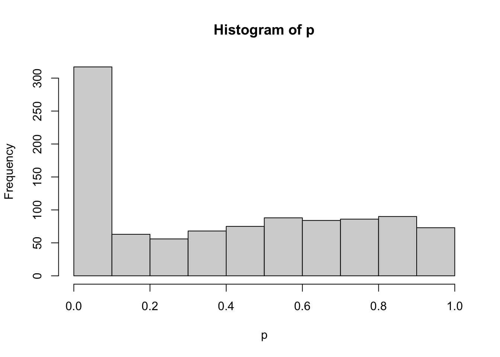
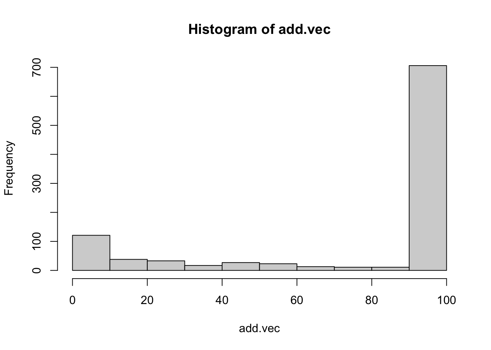
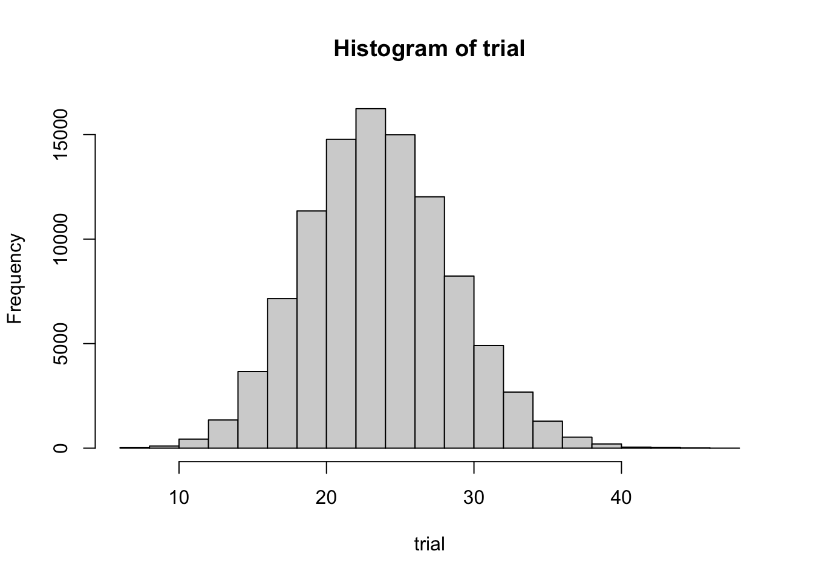
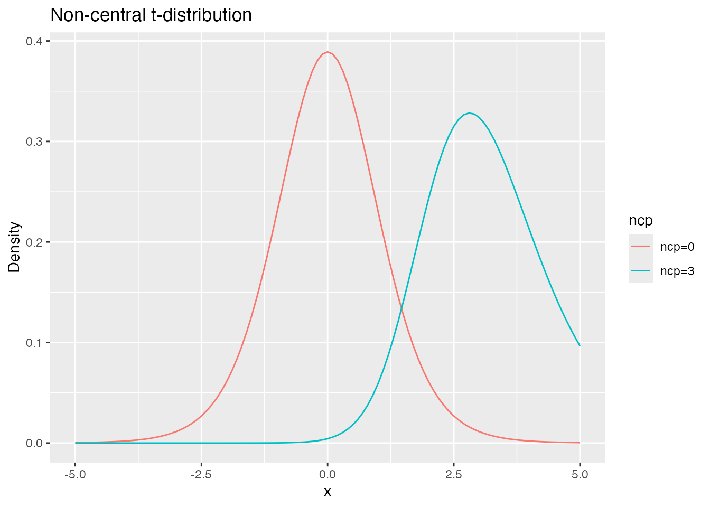

pacman::p_load(tidyverse)
pacman::p_load(broom) # tidies model output; install if absent10 Questionable Research Practices and Sample-Size Planning
So far we have used simulation to generate synthetic data and to reverse-engineer the NHST procedure, examining the test as a model.
Simulation creates a virtual world; we can build whatever data we like and probe — in a virtual setting — practices that are forbidden in real research. We use that capability here to see, concretely, how QRPs go wrong.
10.1 Questionable research practices
10.1.1 Repeated testing
NHST is a probabilistic decision procedure, so it can fail in two ways: declaring a difference when there is none (Type I error), or missing a real difference (Type II error). As discussed, Type II error is essentially unknowable in advance (one does not know in advance how large a real effect is), so the practical aim is to control Type I error.
These decisions should be reached on principled grounds — independent of any researcher’s wish that the result be significant. Yet the control can fail in unintended ways.
One way is repeated testing. In ANOVA, for instance, one might think: “Since after a significant omnibus result we run pairwise comparisons anyway, why not skip the omnibus and run pairwise \(t\)-tests from the start?” Let us see whether this is really fine, via simulation.
The code below generates a dataset with no real differences and compares: (1) running an ANOVA and asking whether it is significant; and (2) running pairwise \(t\)-tests on each pair and asking whether any of them is significant. We use base R’s aov() rather than anovakun, since we need the returned \(p\)-value programmatically.1 Note the if statement that defines “some pair is significant.”
alpha <- 0.05 # significance level
n1 <- n2 <- n3 <- 10 # per-group sample size
mu <- 10 # group mean
sigma <- 2 # group SD
mu1 <- mu2 <- mu3 <- mu # identical population means across groups
set.seed(12345)
iter <- 1000
anova.detect <- rep(NA, iter) # flag for ANOVA significance
ttest.detect <- rep(NA, iter) # flag for "any pairwise test significant"
for (i in 1:iter) {
X1 <- rnorm(n1, mu1, sigma)
X2 <- rnorm(n2, mu2, sigma)
X3 <- rnorm(n3, mu3, sigma)
dat <- data.frame(
group = c(rep(1, n1), rep(2, n2), rep(3, n3)),
value = c(X1, X2, X3)
)
result.anova <- aov(value ~ group, data = dat) %>% tidy()
anova.detect[i] <- ifelse(result.anova$p.value[1] < alpha, 1, 0)
# run all pairwise t-tests
ttest12 <- t.test(X1, X2)$p.value
ttest13 <- t.test(X1, X3)$p.value
ttest23 <- t.test(X2, X3)$p.value
ttest.detect[i] <- ifelse(ttest12 < alpha | ttest13 < alpha | ttest23 < alpha, 1, 0)
}
ttest.detect %>% mean() # fraction of simulations with any significant pairwise test[1] 0.109anova.detect %>% mean() # fraction of significant ANOVAs[1] 0.04The pairwise approach declares significance with probability 0.109, well above the nominal 5%. We are detecting differences where there are none — a Type I error rate that has inflated. The ANOVA, by contrast, declares significance 0.04 of the time: correctly controlled at 5%.
The trouble with repeated testing is probabilistic. A 5% Type I error rate per test means a 95% correct-decision rate; with two tests in succession, the joint correct rate is \((1 - 0.05)^2 = 0.9025\); with three tests, \((1 - 0.05)^3 = 0.857375\); and so on. The whole point of NHST is to control Type I error — do not lose sight of that.
10.1.2 The Bonferroni method
A single paper often contains several studies (Study 1, Study 2, …), each with its own probabilistic decision. Even though each study tests its own dataset, the paper as a whole still strings probabilistic decisions together. How should the family-wise significance level be controlled?
One of the simplest options is the Bonferroni correction, the same idea we encountered in ANOVA post hoc tests: divide the significance level by the number of tests, making each test stricter. For five tests at the 5% level, use \(0.05/5 = 0.01\) per test; this controls the family-wise Type I error rate. Let us verify by simulation.
Define a helper to build synthetic data and run a \(t\)-test:
# simulation helper
studyMake <- function(n, mu, sigma, delta) {
X1 <- rnorm(n, mu, sigma)
X2 <- rnorm(n, mu + sigma * delta, sigma)
dat <- data.frame(
group = rep(1:2, each = n),
value = c(X1, X2)
)
result <- t.test(X1, X2)$p.value
return(result)
}The function takes sample size n, mean mu, SD sigma, and effect size delta, and returns the \(p\)-value from a two-sample \(t\)-test.
# example: returns the p-value of a t-test
studyMake(n = 10, mu = 10, sigma = 1, delta = 0)[1] 0.9444895Each call is one analysis; num_studies such calls together count as “one paper.” Set num_studies = 3. Using replicate() we obtain a \(p\)-value vector and check whether any test is significant using any(). We evaluate two thresholds: the raw \(\alpha\) and the Bonferroni-adjusted \(\alpha_{\text{adj}}\).
set.seed(12345)
iter <- 1000
alpha <- 0.05
num_studies <- 3
alpha_adjust <- alpha / num_studies # Bonferroni-adjusted alpha
FLG.detect <- rep(NA, iter)
FLG.detect.adj <- rep(NA, iter)
for (i in 1:iter) {
p_values <- replicate(num_studies, studyMake(n = 10, mu = 10, sigma = 1, delta = 0))
FLG.detect[i] <- ifelse(any(p_values < alpha), 1, 0)
FLG.detect.adj[i] <- ifelse(any(p_values < alpha_adjust), 1, 0)
}
FLG.detect %>% mean() # uncorrected family-wise Type I error rate[1] 0.145FLG.detect.adj %>% mean() # Bonferroni-corrected family-wise Type I error rate[1] 0.049The uncorrected family-wise Type I error rate is 0.145 — above 5%; somewhere among the three studies one would draw a wrong conclusion. With the correction it drops to 0.049, correctly controlled.
It is common for a single paper to include several studies, whose results are stitched together in a general discussion. The general discussion derives an overall conclusion from individual analyses; if any single analysis is wrong, the whole edifice can collapse — like building a house on a foundation laced with rotten beams. Scientific work is cumulative; correct control is essential.
10.1.3 N-augmentation
Suppose you have collected data with effort, and the test for what you believed was a real effect fails to reach significance. It is natural to feel disappointed, and to wonder whether better data, or more data, would have helped. But would it really be all right to just collect a few more participants?
This is a textbook QRP. NHST is, in a sense, a competition for ruling on truth or falsity; changing the number of players mid-game is not allowed. Simulation confirms this.
In the code below we begin with n1 = n2 = 10 and run a \(t\)-test. We are checking Type I error, so the effect size is 0. If the test is non-significant, we add one more participant per group and re-test. With effect size 0, the loop would in principle never terminate by chance alone; we cap it at 100 added participants. After all that QRP “effort,” how often does the test reach significance?
iter <- 1000
alpha <- 0.05
p <- rep(0, iter)
add.vec <- rep(0, iter)
set.seed(123)
n1 <- n2 <- 10
mu <- 10
sigma <- 2
delta <- 0
## main simulation
for (i in 1:iter) {
# initial data
Y1 <- rnorm(n1, mu, sigma)
Y2 <- rnorm(n2, mu + sigma * delta, sigma)
p[i] <- t.test(Y1, Y2)$p.value
# add data as needed
count <- 0
## keep adding until the p-value drops below 5% or 100 additions reached
while (p[i] >= alpha && count < 100) {
Y1_add <- rnorm(1, mu, sigma)
Y2_add <- rnorm(1, mu + sigma * delta, sigma)
Y1 <- c(Y1, Y1_add)
Y2 <- c(Y2, Y2_add)
p[i] <- t.test(Y1, Y2)$p.value
count <- count + 1
}
add.vec[i] <- count
}
## summary
ifelse(p < 0.05, 1, 0) |> mean()[1] 0.306hist(p)
hist(add.vec)
The empirical Type I error rate is 0.306 — wildly above 5%. The “significance” wrung out of patient data-adding is the gift of chance: a phantom of bad practice. As the histogram of additions shows, 75% of runs hit the cap of 100 added participants. Pure cost, no benefit.
10.1.4 Not pre-specifying the sample size
Look at the “sample size not fixed in advance” issue from another angle. クルシュケ ([2014] 2017) uses the example: “I flipped a coin 24 times and got 7 heads.” Since 7/24 is below half, the coin seems biased toward tails. Take the null hypothesis to be that the coin is fair (\(P(\text{head}) = 0.5\)).
Behind the report “7 heads out of 24” lies the implicit question of whether the analyst had committed to 24 flips in advance (i.e., whether the sample size was pre-specified).
In the honest case — 24 flips were decided in advance — coin flips are Bernoulli trials,2 so a sequence follows a binomial. The binomial test is
N <- 24
# probability of getting 7 (or fewer) heads
pbinom(7, N, 0.5) * 2[1] 0.06391466pbinom() gives the cumulative probability. The null is “the coin is fair,” \(\theta = 0.5\). We multiply by 2 because we run a two-tailed test (the alternative is “not fair,” so 7 tails would also be evidence). The \(p\)-value is 0.0639147, not significant at 5%. A result like this is not unusual.
Now the second scenario. Suppose the analyst had decided to keep flipping until 7 heads were obtained, and it just happened to take 24 trials. The distribution of the number of trials needed is a negative binomial, available as pnbinom():
k <- 7
# probability of needing at least 24 trials
pnbinom(k, 24, 0.5) * 2[1] 0.003326893With \(\theta = 0.5\), the probability of needing 24 trials to obtain 7 heads is 0.0033269, significant at the 5% level. This is rare enough that the null \(\theta = 0.5\) is suspect. Note that the \(p\)-value differs from the previous scenario for exactly the same observed data.
Now the third scenario. Suppose the analyst had not pre-specified the number of trials but had pre-specified a fixed amount of time: “I’ll flip for about 5 minutes.” The result happens to be 24 trials, but it might just as well have been 23 or 25 or 20 or 30. Model the number of trials as Poisson-distributed with mean 24 (a distribution that peaks near 24):3
set.seed(12345)
iter <- 100000
## trial counts peaking at 24
trial <- rpois(iter, 24)
hist(trial)
For each simulated run, compute the number of heads (via a binomial), divide by the realised number of trials, and ask how often the resulting proportion is rarer than \(7/24\):
result <- rep(NA, iter)
for (i in 1:iter) {
result[i] <- rbinom(1, trial[i], 0.5) / trial[i]
}
## proportion of runs with a more extreme rate than 7/24
length(result[result < (7 / 24)]) / iter[1] 0.02262Doubling for a two-tailed test gives 0.04524, on the verge of significance.
Three scenarios, three answers. If the design was “flip 24 times,” \(\theta = 0.5\) is not rejected. If the design was “flip until 7 heads,” \(\theta = 0.5\) is rejected. If the design was “flip for 5 minutes,” again rejected. Should the conclusion really depend on a researcher’s intent in this way? That is the question クルシュケ ([2014] 2017) raises.
The deeper issue: “7 heads out of 24” carries no information about which probability distribution generated it — binomial, negative binomial, or some compound. The distribution itself is a likelihood function once the data are known but the parameters are not, i.e., the data-generating mechanism. A test that does not commit to a generative mechanism leaves room for the unscrupulous to say, after the fact, “ah, I was assuming a negative binomial all along.” Hence the need for pre-registration to reduce researcher degrees of freedom.
10.2 Sample-size planning
In addition to pre-specifying how to collect, analyse, test, and adjudicate the data, one should plan the sample size in advance. Bigger is not always better: oversized samples mean larger costs and larger respondent burden. Larger samples also make it easier to declare significance, but the real goal is to estimate the substantive effect, not just to declare significance. As we have seen above, varying the sample size until significance is reached is a clear-cut bad practice.
What you need to choose a sample size in advance is — as the simulation-driven exercises in this book have shown — an estimate of the effect size.4 How to set that estimate? Look at prior work; lean on a domain consensus on “below this we would not consider it meaningful.”5
10.2.1 Independent-samples t-test
Sample-size planning brings in a new parameter: the non-centrality parameter of the test statistic.
Take the independent-samples \(t\)-test. As the name says, the test uses the \(t\)-distribution to evaluate the realised test statistic under the null. The null is \(\mu_0 = \mu_1 - \mu_2 = 0\), and the test statistic is
\[ T = \frac{d - \mu_0}{\sqrt{U^2_p \cdot \frac{n_1 + n_2}{n_1 n_2}}}.\]
In the numerator, \(d - \mu_0 = (\bar{X}_1 - \bar{X}_2) - (\mu_1 - \mu_2)\), and under the null the second term is zero, leaving a \(t\)-distribution centred at zero. But the null is the theoretical reference point; in the real world where the null is false, the test statistic follows a \(t\)-distribution displaced from zero by an amount that depends on \(\mu_1 - \mu_2\). Such a shifted distribution is the non-central \(t\)-distribution, with the offset given by the non-centrality parameter. For the \(t\)-test it is
\[ \lambda = \frac{(\mu_1 - \mu_2) - \mu_0}{\sigma}\sqrt{n}. \]
The non-central \(t\)-distribution differs from the central \(t\) by this \(\lambda\). In R, dt() has an ncp argument, defaulting to 0. Let us plot both:
df <- 10 # degrees of freedom
ggplot(data.frame(x = c(-5, 5)), aes(x = x)) +
stat_function(fun = dt, args = list(df = df, ncp = 0), aes(color = "ncp=0")) +
stat_function(fun = dt, args = list(df = df, ncp = 3), aes(color = "ncp=3")) +
labs(
title = "Non-central t-distribution",
x = "x",
y = "Density",
color = "ncp"
)
With ncp = 0 we are in the null world, in which \(\alpha\) (the Type I error rate) is computed. Setting ncp to a non-zero value (an effect-size shift) gives the distribution under a non-null mean difference, from which \(\beta\) (the Type II error rate) is computed.
Consider \(\mathrm{df} = 10\), \(\mathrm{ncp} = 3\). Type I error obtains when the realised statistic exceeds the upper 2.5% critical value of the central \(t\):
qt(0.975, df = 10, ncp = 0)[1] 2.228139If the true offset is actually \(\mathrm{ncp} = 3\), the Type II error probability is
qt(0.975, df = 10, ncp = 0) %>% pt(df = 10, ncp = 3)[1] 0.2285998The further ncp is from zero, the smaller the Type II error. The non-centrality can be written in terms of the population effect size \(\delta = ((\mu_1 - \mu_2) - \mu_0)/\sigma\) as \(\lambda = \delta \sqrt{n}\).
With this, we can plan a \(t\)-test sample size. For simplicity, assume equal per-group sample sizes.
Recall the denominator \(\sqrt{U_p^2 \cdot (n_1+n_2)/(n_1 n_2)}\); the role of \(\sqrt{n}\) in the non-centrality is played by the pooled sample size.6
alpha <- 0.05
beta <- 0.2
delta <- 0.5
for (n in 10:1000) {
df <- n + n - 2
lambda <- delta * (sqrt((n * n) / (n + n)))
cv <- qt(p = 1 - alpha / 2, df = df) # Type I critical value
er <- pt(cv, df = df, ncp = lambda) # Type II error probability
if (er <= beta) {
break
}
}
print(n)[1] 64We start at \(n = 10\) and increase until the Type II error drops to \(\beta\), breaking out of the loop. With 64 per group (128 total), the target is met. For unequal per-group sample sizes and other variants, see 小杉 et al. (2023).
10.2.2 Sample-size planning by simulation
The non-central F-distribution covers sample-size planning for ANOVA, and the same idea generalises to other tests via their non-central counterparts. But there is a lot of case-by-case learning to do: understanding the non-central distribution for each test, computing the non-centrality, and so on.
A computational alternative is to plan by simulation. With a chosen sample size and effect size, we generate synthetic data; we then test the data. Repeating this many times approximates the Type II error rate as a relative frequency. Varying the sample size and repeating, we converge on the sample size that meets the desired power.
The code below finds the sample size required to obtain 80% power for a non-zero correlation when \(\rho = 0.5\):
pacman::p_load(MASS)
set.seed(12345)
alpha <- 0.05
beta <- 0.2
rho <- 0.5
sd <- 1
Sigma <- matrix(NA, ncol = 2, nrow = 2)
Sigma[1, 1] <- Sigma[2, 2] <- sd^2
Sigma[1, 2] <- Sigma[2, 1] <- sd * sd * rho
iter <- 1000
for (n in seq(from = 10, to = 1000, by = 1)) {
FLG <- rep(0, iter)
for (i in 1:iter) {
X <- mvrnorm(n, c(0, 0), Sigma)
cor_test <- cor.test(X[, 1], X[, 2])
FLG[i] <- ifelse(cor_test$p.value > alpha, 1, 0)
}
t2error <- mean(FLG)
print(paste("At n =", n, ", beta is", t2error))
if (t2error <= beta) {
break
}
}[1] "At n = 10 , beta is 0.681"
[1] "At n = 11 , beta is 0.639"
[1] "At n = 12 , beta is 0.612"
[1] "At n = 13 , beta is 0.566"
[1] "At n = 14 , beta is 0.563"
[1] "At n = 15 , beta is 0.471"
[1] "At n = 16 , beta is 0.462"
[1] "At n = 17 , beta is 0.419"
[1] "At n = 18 , beta is 0.402"
[1] "At n = 19 , beta is 0.385"
[1] "At n = 20 , beta is 0.353"
[1] "At n = 21 , beta is 0.344"
[1] "At n = 22 , beta is 0.312"
[1] "At n = 23 , beta is 0.285"
[1] "At n = 24 , beta is 0.256"
[1] "At n = 25 , beta is 0.265"
[1] "At n = 26 , beta is 0.21"
[1] "At n = 27 , beta is 0.227"
[1] "At n = 28 , beta is 0.176"print(n)[1] 28The simulation count, the upper bound on \(n\), and the step size are set conservatively here; tune to taste.
10.3 Exercises
- In a one-factor three-level between-subjects ANOVA, compare by simulation: (1) the Type I error rate of the omnibus ANOVA, and (2) the Type I error rate of “any pairwise comparison is significant.” Set \(n_1 = n_2 = n_3 = 10\) and equal group SDs \(\sigma = 1\).
- Does the N-augmentation problem also affect correlation tests? With population correlation \(\rho = 0\), start at \(n = 10\) and add observations one at a time until the test is significant; repeat this virtual study 1000 times. Cap the additions at 100 and use \(\alpha = 0.05\). Compute the final significance rate.
- With \(\alpha = 0.05\), \(\beta = 0.2\), and effect size \(\delta = 1\), plan the sample size for an independent-samples \(t\)-test by (1) the analytic method using the non-central \(t\) and (2) a simulation-based approximation. Confirm that the two give comparable answers.
anovakun prints results to the console without returning a value, and we need the \(p\)-value here.↩︎
A trial with a binary outcome (head = 1 or tail = 0) follows a Bernoulli distribution with parameter \(\theta\) (the probability of head): \(P(X = k) = \theta^k (1 - \theta)^{1-k}\), \(k \in \{0, 1\}\). The 1/0 encoding suits many metaphors (life/death, male/female, success/failure), giving it broad reach.↩︎
The Poisson distribution takes non-negative integers and is used for counts. It has a single parameter \(\lambda\), equal to both the mean and the variance — a strikingly simple distribution.↩︎
One also needs \(\alpha\) and the desired power \(1 - \beta\), but conventionally \(\alpha = 0.05\) and \(1 - \beta \approx 0.8\).↩︎
This “smallest effect size of interest” is sometimes abbreviated SESOI. See 小杉 et al. (2023).↩︎
Under equal population variances, \(\sigma^2(1/n_1 + 1/n_2) = \sigma^2 (n_1 + n_2)/(n_1 n_2) = \sigma^2 / (n_1 n_2 / (n_1 + n_2))\).↩︎